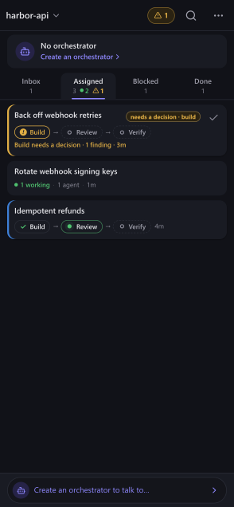
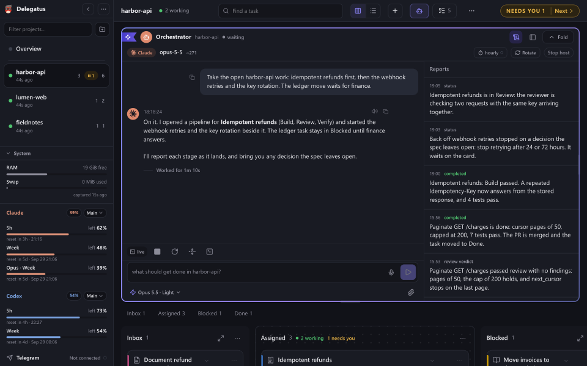
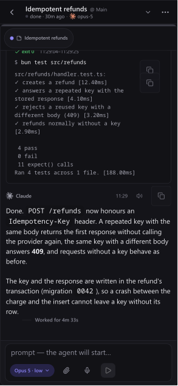

Delegate everything.
Tell one agent what you want shipped. It runs the builders and reviewers, checks the work and reports back.


It runs the work, and checks it.
- Each task gets a worktree, a builder and a fresh reviewer.
- Claude Code builds, Codex reviews, and they message each other.
- Reports land as work passes; decisions come to you.



Every conversation, open.
- Every Claude Code, Codex and Copilot session reads as a chat.
- Search every conversation with /.
- Several Claude and Codex accounts, limits in view.
It finds you when it needs you.
- Your board on your phone, inside your tailnet.
- Telegram built in: agents read chats you allow and report through your bot.
Your bot, in Telegram
Idempotent refunds: Build passed. 4 tests pass.
Retry window: 24 or 72 hours?